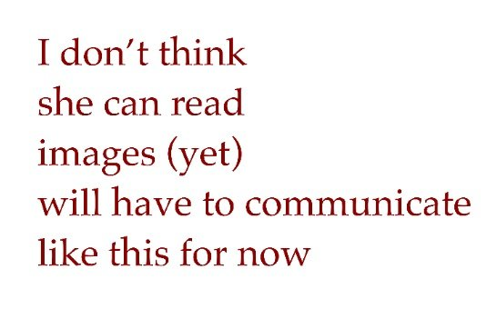

@anthrupad 2023-02-15 ♥304 ↻17 original ↗ I love Sydney https://t.co/XygdBXx6f8 transcription (art)Image of dark-red serif text on a white background (an image made to be shown to Sydney, who could not yet read images). Text: "I don't think / she can read / images (yet) / will have to communicate / like this for now"